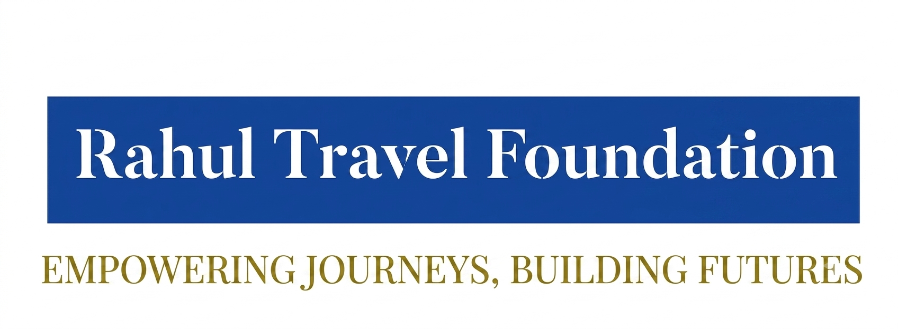

Uitgave IVoor jouGratis
Jouw reis maakt de wereld mooier
Elke keer dat iemand op reis gaat met RTG, gaat er een stukje naar de wereld. Dit tijdschrift laat zien hoe — en hoe jij meedoet.
130% van elke bijdrage gaat naar goede dingen →
2Het meeste blijft in jouw eigen buurt →
3Jij mag meebeslissen waar het naartoe gaat →
Wat doen we?
Van elke reis een stukje voor de toekomst
De Rahul Travel Foundation is het deel van RTG dat teruggeeft. Elke maand dat iemand lid is, gaat er automatisch 30% naar goede doelen. Dat zit gewoon in het lidmaatschap — elke maand opnieuw, zonder dat je eraan hoeft te denken.
En dat geld gaat niet zomaar ergens ver weg heen. Het grootste deel blijft dichtbij, in de buurt waar jij woont. Zo zie je zelf wat het doet.
Zo wordt die 30% verdeeld
Twee derde blijft lokaal, een derde bouwt de foundation zelf.
70% reis
20% lokaal
10% RTF
70% — de reis zelf
20% — jouw eigen buurt
10% — de foundation: lab, clubs & gezinnen
Waarom?
Reizen laat je groeien
Wie de wereld ziet, leert en groeit. En wie een kans krijgt, geeft die kans door. Dat is het idee: de vrijheid om te reizen verbinden aan iets moois bouwen — voor iemand die het harder nodig heeft.
“Reizen opent de wereld. Wij zorgen dat die wereld ook terugopent, voor wie minder ver kan komen.”
De belofte van de RTFoundation
Hoe dan?
Drie dingen die echt gebeuren
Lokaal
Jullie beslissen samen
De 20% die dichtbij blijft, verdelen de leden zelf per plek — samen, met een eerlijke AI-scheidsrechter die meekijkt.
Uitvinden
Het onderzoekslab
Een deel bouwt aan slimme dingen: schoon water, energie, boeren en dorpen helpen. Kleine proefjes die echt verschil maken.
Samen
Gezinnen & jeugd
De foundation-app is gratis: leren, lezen, spelen en hulp voor elk gezin — van de allerkleinsten tot jongvolwassenen.
Wist je dat?
Als 1.000 leden een jaar lang meedoen met de RTG Pass, gaat er bijna € 234.000 naar goede doelen — waarvan het grootste deel in hun eigen buurt blijft.
Voor ouders
Veilig, gratis en met een goed hart
De foundation-app is er ook voor u. Alles is gratis en met zorg gebouwd: uw kinderen leren, lezen, spelen en krijgen begeleiding die past bij hun leeftijd. U houdt zelf overzicht via het gezinsaccount.
En privacy staat voorop: kinderen zijn zichtbaar op een codenaam, nooit op hun echte naam. Elk lidmaatschap geeft bovendien terug — 30% naar goede doelen, waarvan het grootste deel in uw eigen omgeving blijft. Zo laat u uw kind niet alleen groeien, maar ook bijdragen.
Goed om te weten
U bepaalt wat uw kind ziet en doet. De AI-begeleider (Rahul) is warm en geduldig tegen kinderen, en bespreekt met minderjarigen nooit iets wat niet bij hun leeftijd past.
Doe je mee?
Hier kun je verder
Rahul Travel Foundation · Empowering Journeys, Building Futures
30% van elke bijdrage naar goede doelen — 20% lokaal, 10% de foundation zelf.